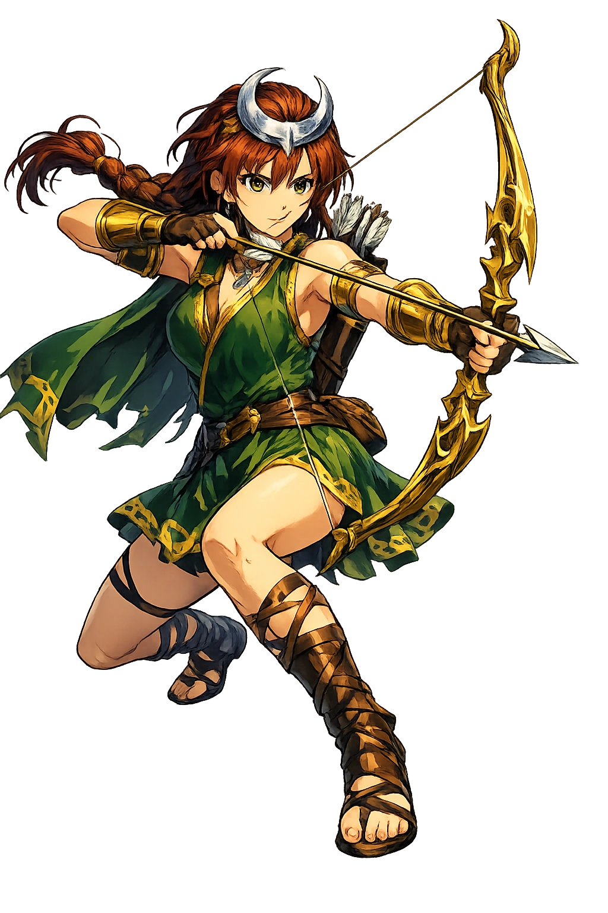

The Living Myth
Hunt, Wilderness, Moon · The Virgin Huntress · Lady of Wild Beasts

Stories of Ártemis
Ártemis's myths are almost all about the protection of boundaries — between virgin and sexual, wild and civilized, mortal and divine. Those who cross them pay terribly, and the goddess who presides over childbirth is the same one who strikes down the intruder at her bath.
Hounded by Hera's curse, the Titaness Leto found refuge only on the floating island of Delos, where she first bore Artemis — or, in the rival tradition preserved by Apollodorus, bore Artemis on Ortygia and her brother on Delos, with Artemis as the elder twin who then, goddess of childbirth at four days old, helped deliver Apollo (Pseudo-Apollodorus, Bibliotheca 1.4.1; the Homeric Hymn to Delian Apollo 14–18 knows the sister's birth beside the brother's). The sources do not fully agree — Ortygia ('Quail Island') was claimed by Delos, Syracuse, and Ephesus alike — but they agree on the essential: the twins belong to the bare island and the palm tree, not to any city. Callimachus' Hymn to Artemis expands her childhood: at three years old she sat on Zeus's knee and asked for eternal virginity, a band of nymph attendants, and mountains for her domain (Callimachus, Hymn 3.6–25). Her first request was refusal — the power to say no forever.
The Theban prince Actaeon — grandson of Cadmus, the finest huntsman of his age — came, by bad luck or by design, upon the goddess bathing in the spring of Gargaphia with her nymphs. 'The man who has seen what should not be seen,' in the most reticent ancient phrasing, has lost the right to report it (our fullest tellings are Ovid, Metamorphoses 3.138–252; Euripides, Bacchae 337–340 names Actaeon as an impious hunter punished; earlier Greek versions, now fragmentary, already knew the death). Artemis flung the water of the spring at him — or sprinkled him with stag's blood — and antlers sprouted, neck lengthened, and the hunter's own hounds, deceived by the new scent, ran him down and tore him apart while he tried to cry his own name. The myth is a boundary marker of absolute severity: the wild goddess cannot be seen by the male gaze, and the forest punishes by transforming the trespasser into his own prey. Actaeon is what Ovid calls him: the man who learned too late which goddess owned the wood.
Callisto, daughter of Lycaon, was sworn to Artemis's band, a huntress of the first rank — until Zeus desired her. He came to her in Artemis's own shape; when her pregnancy could no longer be hidden, the goddess, in anger or at Hera's instigation, transformed her into a bear (Hesiod's account survives in fragments; Pseudo-Apollodorus, Bibliotheca 3.8.2; Ovid, Metamorphoses 2.401–531 gives the fullest version, and his Artemis discovers the pregnancy at the communal bath — a pointed inversion of Actaeon's crime). Years later Callisto's son Arcas, hunting in the forest, nearly killed his own mother, and Zeus stayed the arrow and set them both in the sky as Ursa Major and Arctophylax, the Bear-Watcher. The myth is the tragedy of Artemis's order from inside: her band can exclude men, but it cannot exclude Zeus, and the goddess who presides over virginity presides also over its violation, punishing the victim with the same severity as the intruder. The constellation is the only mercy the story allows.
When the Greek fleet lay becalmed at Aulis and the seer Calchas revealed that Artemis held the winds — angry, some said, at a boast of Agamemnon's, others at the killing of a sacred hind — the price of Troy was the commander's daughter. Iphigeneia was lured from Mycenae with the promise of marriage to Achilles; at the altar, in the most haunting of the variants, she went willingly, 'her beauty and misery marveled at by the whole host' (the Cypria's version, summarized by Proclus; Lucretius 1.84–100; Euripides builds both his Iphigenia plays on the escape variant). In one tradition the goddess accepted the sacrifice; in another — the one Euripides dramatized for the Athenians — she substituted a deer at the last instant and swept the girl to the distant shore of the Taurians, where Iphigeneia served as Artemis's priestess until her brother Orestes found her (Euripides, Iphigenia among the Taurians). The double tradition makes the goddess both the demander of blood and its merciful remitter — the double face of every hunt, in which the same hand looses the arrow and lifts the newborn lamb.
When King Oeneus of Calydon forgot Artemis in his harvest sacrifices, the goddess sent the great boar — 'with burning eyes and a neck stiff with bristles' — to ravage the fields, orchards, and herds of Aetolia, and only the greatest heroes of Greece could be assembled against it: Meleager and Atalanta, Theseus and Peleus, Nestor in his youth, the sons of Thestius (Homer, Iliad 9.533–599 tells the wrath and its price; Pseudo-Apollodorus, Bibliotheca 1.8.2 gives the full hunt). Atalanta drew first blood, and Meleager, who loved her, awarded her the hide — and killed his own uncles when they tried to take it, igniting the family war in which he died, cursed by his mother Althaea who burned the brand on which his life depended. Phoenix tells the story in the Iliad's ninth book as a parable of the wrath that follows a slighted god: one forgotten sacrifice unmakes a kingdom, an assembly of heroes, and a family in a single season. The goddess of the wild requires exact accounting, and her ledger runs in generations.
Hunt, Wilderness, the Moon, and Childbirth
Ártemis is Apóllōn's twin but his opposite. Where he imposes order, she preserves wildness. She is the huntress who protects the animals she kills, the virgin who oversees childbirth, the goddess of the liminal space between city and forest, child and adult, human and beast.
She ranges mountains and forests with her nymphs, bringing sudden death to prey and hunters alike.
Marshes, groves, and mountain passes are hers; she guards the boundary between the tamed and the untamed.
As Lochia and Kourotrophos, she eases birth and protects the young — despite her own eternal virginity.
Later tradition identifies her with Selene; her silver bow becomes the crescent moon.
From the original script to the living URL
Ἄρτεμις
The name in its original Greek form. Ártemis (Ἄρτεμις) is attested in the source tradition — “Safe, unharmed (from ἀρτεμής)”. Its acute accents carry the full phonetic and orthographic weight of the source tradition.
artemis
Reduced to plain artemis, the name loses everything that made it specific: acute accents. What remains is an ASCII string that machines can parse but that no longer speaks with its original voice.
Ártemis
The Unicode restoration recovers what ASCII flattened. Ártemis restores acute accents, returning the name to its original written dignity. The domain encodes to Punycode, but the browser displays the truth.
Ártemis.com → xn--rtemis-ota.com
The non-ASCII characters in Ártemis are encoded while the ASCII remains visible. To the DNS, it is Punycode. To humanity, it is Ártemis.
Owned, ideal, and ASCII forms of Ártemis
Ártemis
Restores Ἄρτεμις. The live temple domain — ártemis.com.
artemis
Flattens Ἄρτεμις. The plain ASCII fallback — what DNS and legacy systems see.
How Ártemis was spoken
How Ártemis travels from ancient script to the modern URL
Greek Ἄρτεμις; possibly related to ἀρτεμής “safe, unharmed" or to a pre-Greek Anatolian goddess.
Hunt, Wilderness, Moon
The Unicode restoration Ártemis preserves Greek stress and length; the ASCII form artemis loses these features.
Ártemis is the goddess of the untouched. Not the virginity of inexperience, but the virginity of self-possession. She hunts not because she lacks feeling but because she has chosen a boundary and will kill to defend it. The forest is not her prison; it is her chosen territory.
Enter Extended Lore